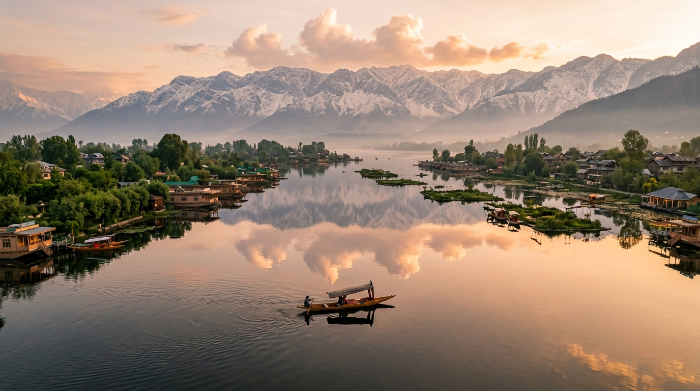
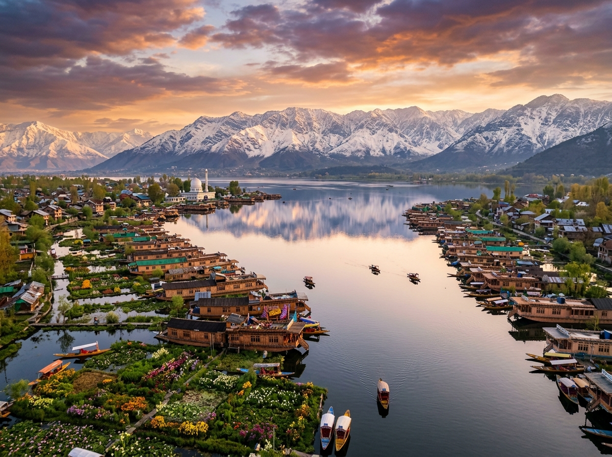
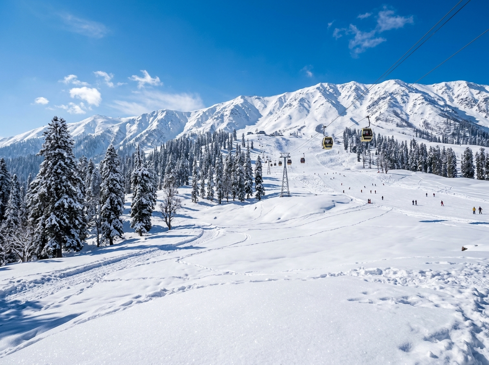
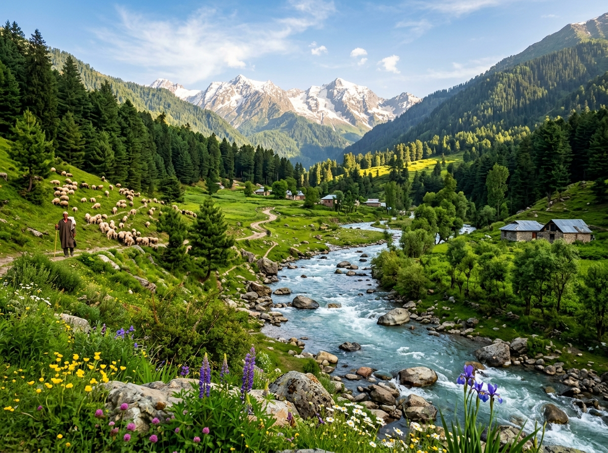
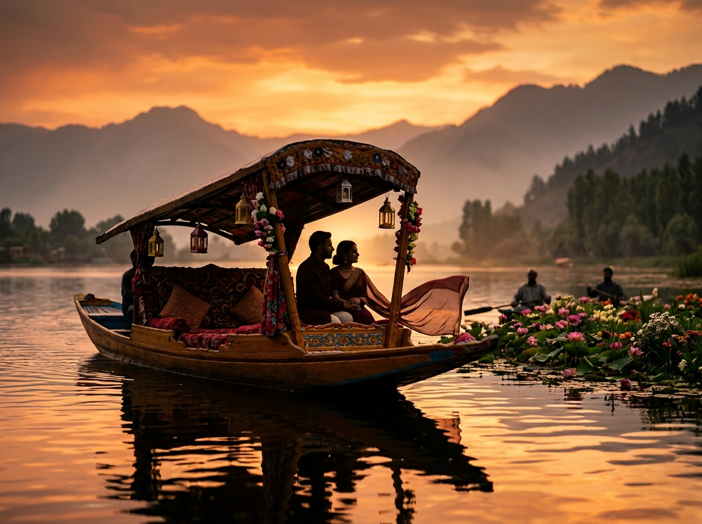
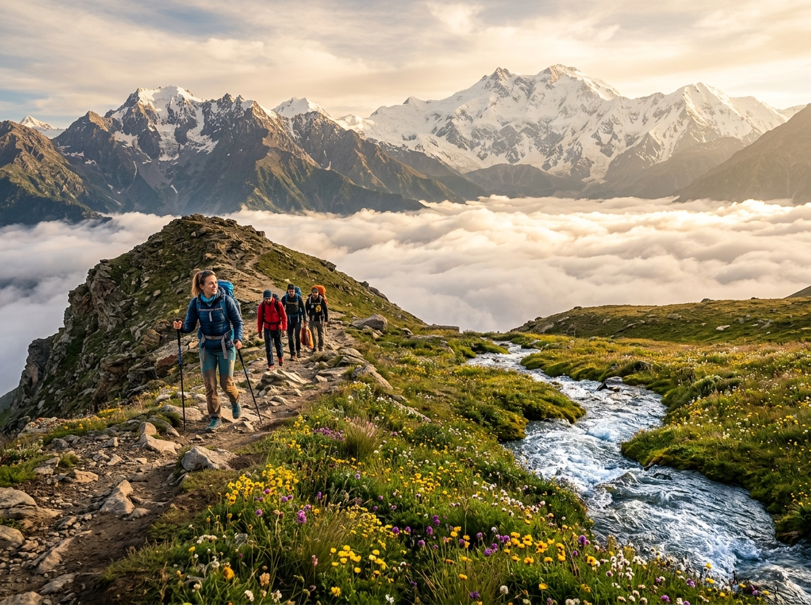

Kashmir Highlights Tour
Explore the best of Kashmir's iconic sights: Srinagar houseboat romantic stays, Gulmarg Gondola high-altitude skiing, and Pahalgam river meadows.

Package Overview
This 5-day journey is specially curated for travelers wanting to experience the absolute highlights of Jammu & Kashmir. Perfect for families, friend groups, and couples alike, the itinerary covers the floating charm of Srinagar, the high slopes of Gulmarg, and the stunning pine-clad river banks of Pahalgam.
You will stay in deluxe hotels and spend one memorable night inside a beautifully hand-carved heritage cedar-wood houseboat floating on Dal Lake. Includes dedicated private sedan transfers, sightseeing passes, daily fresh breakfasts, and dinners.
Key Highlights
- Stay 1 Night in a Luxury Dal Lake Houseboat
- Handcrafted Ornate Shikara ride during Sunset
- Explore Shalimar and Nishat Mughal Gardens
- Ride the Gulmarg Gondola - Asia's Highest Cable Car
- Visit snowfields of Apharwat Peak
- Hike along the turquoise Lidder River in Pahalgam
- Scenic drive through Betaab Valley and Aru Valley
- Saffron fields visit in Pampore & shopping in Srinagar
Quick Info
Arrival in Srinagar & Sunset Shikara Ride
On arrival at Srinagar Airport, meet our representative and get transferred in your private car to Dal Lake. Check-in to your luxury houseboat. In the evening, enjoy a peaceful, romantic 2-hour Shikara boat ride on the lake. Witness the floating gardens, local vendors selling flowers, and the beautiful sunset. Enjoy dinner and stay overnight in the houseboat.
Srinagar Mughal Gardens Sightseeing
After breakfast, check-out from the houseboat and transfer to your luxury hotel. Proceed for a sightseeing tour of Srinagar. Visit Shalimar Bagh (Abode of Love) built by Emperor Jahangir, Nishat Bagh (Garden of Pleasure), and the royal springs of Chashma Shahi. In the afternoon, visit the historic Shankaracharya Temple on a hilltop for panoramic city views. Overnight in Srinagar hotel.
Gulmarg Meadow Snow Excursion
Take a morning drive (54 km) to Gulmarg, passing through willow and pine-lined mountain roads. On arrival, board the famous Gulmarg Gondola (cable car passes pre-booked) up to Phase 1 (Kongdoori) and Phase 2 (Apharwat Peak at 14,000 ft). Play in the snow, try skiing with local trainers, or hike along the frozen lake. Return to Srinagar in the evening for dinner and overnight stay.
Pahalgam River Valleys Tour
After early breakfast, drive to Pahalgam (96 km), the "Valley of Shepherds". Stop en-route at Pampore to see raw saffron fields. In Pahalgam, take a local vehicle to explore the magnificent Betaab Valley (named after the Bollywood movie Betaab) and Aru Valley, a beautiful meadow hamlet. Walk along the roaring Lidder River. Return to Srinagar hotel for dinner.
Shopping & Airport Departure
Enjoy breakfast in your hotel. Check-out and proceed for some last-minute souvenir shopping in Srinagar - look for premium pashmina shawls, organic saffron, walnuts, and papier-mâché crafts. Get transferred in time to Srinagar Airport for your onward flight home with sweet memories of Kashmir.
✅ Inclusions
- 1 Night stay in Premium Houseboat on Dal Lake
- 3 Nights stay in Deluxe 4-star hotels in Srinagar
- Daily MAP meals (4 Breakfasts + 4 Dinners in hotel buffer)
- All inter-destination transfers in private AC sedan car
- Fuel charges, toll tax, state permits, and driver allowance
- Complimentary 2-hour Shikara boat ride on Dal Lake
- Gulmarg Gondola Phase 1 booking ticket passes
❌ Exclusions
- Airfare / Train tickets to and from Srinagar
- Daily lunch and extra snacks or beverages ordered
- Gulmarg Gondola Phase 2 ticket (optional, ₹950 extra)
- Local union vehicles in Pahalgam for Aru/Betaab valley (approx ₹2500 total)
- Horse rides, pony rides, ski gear rent, and tour guide tips





